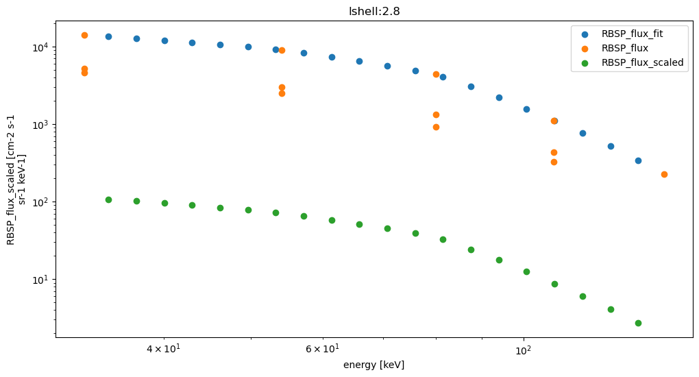

Contents
import matplotlib.pyplot as plt
import numpy as np
import pandas as pd
import xarray as xr
ds0 = xr.open_dataset('../data/vdk_flux_calc_test.nc')
ds1 = xr.open_dataset('../data/RBSP-ECT_FB_precip.nc')
ds1['RBSP_flux_scaled']
<xarray.DataArray 'RBSP_flux_scaled' (time: 6154, lshell: 36, energy: 120, percentiles: 4)>
[106341120 values with dtype=float32]
Coordinates:
* time (time) datetime64[ns] 2013-01-01T05:47:30.000004608 ... 2019...
* lshell (lshell) float32 2.5 2.6 2.7 2.8 2.9 ... 5.6 5.7 5.8 5.9 6.0
* energy (energy) float32 1.0 1.074 1.153 ... 4.041e+03 4.338e+03 5e+03
* percentiles (percentiles) float32 100.0 75.0 50.0 25.0
Attributes:
description: RBSP flux scaled to FB-RBSP ratios
units: cm-2 s-1 sr-1 keV-1xarray.DataArray
'RBSP_flux_scaled'
- time: 6154
- lshell: 36
- energy: 120
- percentiles: 4
- ...
[106341120 values with dtype=float32]
- time(time)datetime64[ns]2013-01-01T05:47:30.000004608 .....
- description :
- midpoint time of RBSP orbit
array(['2013-01-01T05:47:30.000004608', '2013-01-01T14:49:29.999997440', '2013-01-01T23:51:15.000011264', ..., '2019-05-06T06:36:30.000000256', '2019-05-06T15:30:44.999990784', '2019-05-07T00:25:29.999999232'], dtype='datetime64[ns]') - lshell(lshell)float322.5 2.6 2.7 2.8 ... 5.7 5.8 5.9 6.0
- description :
- L-star values from 2.5 to 6 every 0.1 L-shell
array([2.5, 2.6, 2.7, 2.8, 2.9, 3. , 3.1, 3.2, 3.3, 3.4, 3.5, 3.6, 3.7, 3.8, 3.9, 4. , 4.1, 4.2, 4.3, 4.4, 4.5, 4.6, 4.7, 4.8, 4.9, 5. , 5.1, 5.2, 5.3, 5.4, 5.5, 5.6, 5.7, 5.8, 5.9, 6. ], dtype=float32) - energy(energy)float321.0 1.074 1.153 ... 4.338e+03 5e+03
- description :
- log10 based energy intervals from 1 keV to 5 MeV
- units :
- keV
array([1.000000e+00, 1.073556e+00, 1.152523e+00, 1.237298e+00, 1.328309e+00, 1.426014e+00, 1.530906e+00, 1.643513e+00, 1.764404e+00, 1.894187e+00, 2.033516e+00, 2.183093e+00, 2.343673e+00, 2.516064e+00, 2.701136e+00, 2.899822e+00, 3.113121e+00, 3.342110e+00, 3.587943e+00, 3.851858e+00, 4.135186e+00, 4.439354e+00, 4.765895e+00, 5.116456e+00, 5.492803e+00, 5.896832e+00, 6.330580e+00, 6.796233e+00, 7.296138e+00, 7.832813e+00, 8.408964e+00, 9.027495e+00, 9.691523e+00, 1.040439e+01, 1.116970e+01, 1.199130e+01, 1.287333e+01, 1.382025e+01, 1.483681e+01, 1.592815e+01, 1.709976e+01, 1.835755e+01, 1.970786e+01, 2.115750e+01, 2.271376e+01, 2.438450e+01, 2.617813e+01, 2.810369e+01, 3.017088e+01, 3.239014e+01, 3.477263e+01, 3.733037e+01, 4.007624e+01, 4.302410e+01, 4.618879e+01, 4.958625e+01, 5.323362e+01, 5.714928e+01, 6.135296e+01, 6.586584e+01, 7.071069e+01, 7.591189e+01, 8.149567e+01, 8.749017e+01, 9.392561e+01, 1.008344e+02, 1.082514e+02, 1.162140e+02, 1.247622e+02, 1.339392e+02, 1.437913e+02, 1.543680e+02, 1.657227e+02, 1.779126e+02, 1.909992e+02, 2.050484e+02, 2.201309e+02, 2.363229e+02, 2.537059e+02, 2.723675e+02, 2.924018e+02, 3.139098e+02, 3.369997e+02, 3.617881e+02, 3.883998e+02, 4.169690e+02, 4.476396e+02, 4.805663e+02, 5.159149e+02, 5.538636e+02, 5.946036e+02, 6.383404e+02, 6.852942e+02, 7.357018e+02, 7.898171e+02, 8.479130e+02, 9.102822e+02, 9.772391e+02, 1.049121e+03, 1.126290e+03, 1.209136e+03, 1.298075e+03, 1.393556e+03, 1.496061e+03, 1.606105e+03, 1.724244e+03, 1.851073e+03, 1.987231e+03, 2.133404e+03, 2.290329e+03, 2.458796e+03, 2.639656e+03, 2.833819e+03, 3.042263e+03, 3.266041e+03, 3.506278e+03, 3.764186e+03, 4.041065e+03, 4.338310e+03, 5.000000e+03], dtype=float32) - percentiles(percentiles)float32100.0 75.0 50.0 25.0
- description :
- FB-RBSP conjunction percentiles - 100, 75, 50 25
array([100., 75., 50., 25.], dtype=float32)
- description :
- RBSP flux scaled to FB-RBSP ratios
- units :
- cm-2 s-1 sr-1 keV-1
plt.figure(figsize=(15,8))
ds0['vdk_energy_spectrum'].sel(e=1e2, method='nearest').sel(time=slice('2018-01-01','2019-05-30')).plot(x='time')
plt.show()
plt.figure(figsize=(15,8))
ds1['RBSP_flux_scaled'].sel(energy=3e2, method='nearest').sel(time=slice('2018-01-01','2019-05-30')).sel(percentiles=50).plot(x='time')
plt.show()
def plt_flux(energy, lshell):
plt.figure(figsize=(15,8))
ds0['vdk_energy_spectrum']\
.sel(e=energy, lshell=lshell, method='nearest')\
.sel(time=slice('2018-01-01','2019-05-30'))\
.plot(label = 'VdK', marker='o', linestyle='none', color='g')
ds1['RBSP_flux_scaled'].sel(percentiles=50)\
.sel(energy=energy, lshell=lshell, method='nearest')\
.sel(time=slice('2018-01-01','2019-05-30'))\
.plot(label = 'RBSP_flux_fit', marker='+', linestyle='none', color='b')
ax = plt.gca()
ax.set_yscale('log')
plt.legend()
plt.show()
return
plt_flux(30,5)
plt_flux(100,5)
plt_flux(300,5)
plt_flux(900,5)

plt_flux(30,4)
plt_flux(100,4)
plt_flux(300,4)
plt_flux(900,4)

def plot_spectrum(date, lshell):
ds3 = ds1.sel(lshell=lshell, time=date, method='nearest')
plt.figure(figsize=(12,6))
ds1['RBSP_flux_scaled'].sel(percentiles=50)
ds3.plot.scatter('energy','RBSP_flux_fit', label = 'RBSP_flux_fit')
ds3.plot.scatter('RBSP_energies','RBSP_flux', label = 'RBSP_flux')
ds3.sel(percentiles=50).plot.scatter('energy','RBSP_flux_scaled', label = 'RBSP_flux_scaled')
ax = plt.gca()
ax.set_xscale('log')
ax.set_yscale('log')
ax.set_title('lshell:'+str(ds3.lshell.values))
plt.legend()
plt.show()
return
plot_spectrum('2019-01-01', 5.0)
plot_spectrum('2019-01-01', 2.8)
